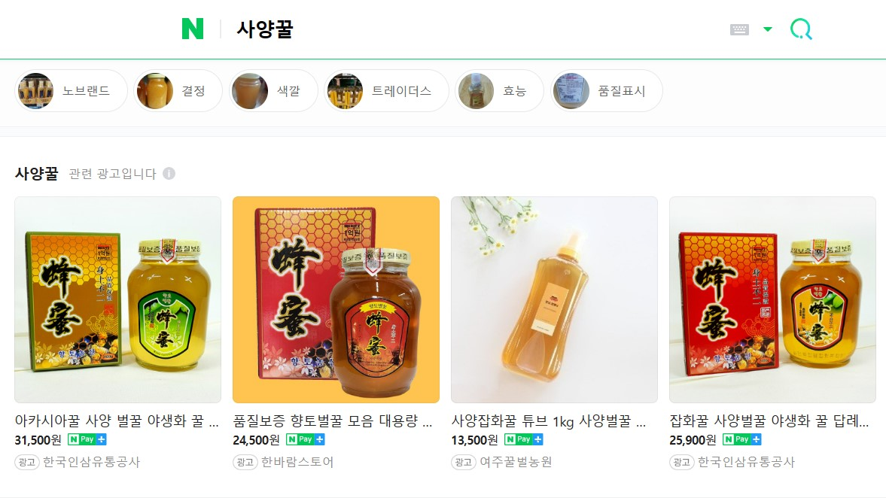

사양꿀에 관하여
2016년부터 설탕을 키우는 사양꿀의 판매가 합법화되었습니다. 천연꿀은 많이 키워야 200~300통밖에 못 키운는 반면에 사양꿀은 설탕만 있으면 키울 수 있기에 500통~1000통이 가능합니다. 벌이 건강해지려고 하면 벌이 좋아하는 꿀샘 나무 밀원수를 통해 먹이를 공급해야 하는데 설탕물로 키운다면 벌의 면역력은 떨어지게 됩니다. 여러분은 사양꿀에 대해 어떻게 생각하시나요?

사양꿀에 관하여